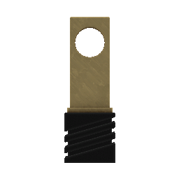

Winner of the 2022 Mono Awards
★ ClutchMasterFTW | Best Forum Guide
Crafting Ingredients
RESET QUANTITY

Electric Furnace

Coal Furnace
Estimated Time To Craft:
00:00:00
report_problem
ATTENTION:
We have detected that your browser window is far below the recommended size (1920px x 1080px). If you would like to view this webpage without any resolution issues, we suggest to resize your browser to a 16:9 ratio size. Thanks!
Proceed
pan_tool
TOOL DEPRECATED!
As of Monolith's recent Update 2.7, the crafting system as a whole has once again had a total overhaul. I will try to create a fully new system for calculating crafting recipes as soon as possible, but as of March 2nd, this tool is nearly useless for crafting.
Proceed